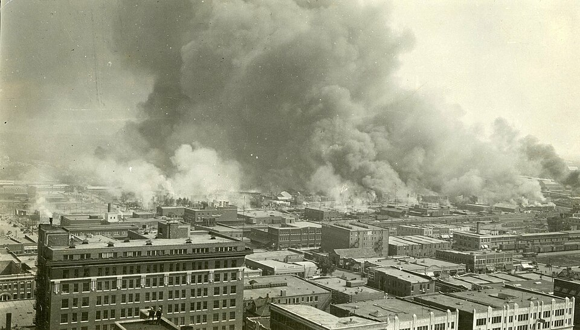

FILE A42-HS-040 // HISTORY & SOCIETIES
The Tulsa Race Massacre and Official Erasure
ASSESSMENT: The 1921 massacre is established; records and public memory were suppressed.
In 1921 a white mob destroyed Tulsa’s prosperous Greenwood district and killed Black residents. Officials disarmed Black residents, deputized white men, and detained survivors. The long absence of public acknowledgment and burial investigation is documented. This case is not an unresolved riot mystery; the uncertainty concerns casualties, graves, and accountability.


Claim and historical context
The violence began after the arrest of Dick Rowland and a false rumor at the courthouse. Armed white mobs attacked Greenwood on 31 May and 1 June, burning homes and businesses. Black residents were detained in camps while property claims and insurance losses went largely unaddressed.
Chronology and primary record
Oklahoma’s 2001 Commission report collected survivor testimony, newspaper coverage, insurance records, and government documents. A 1921 grand jury blamed Black residents, while local authorities’ own actions helped enable the destruction. Later forensic searches identified possible mass graves but not all victims.
What the record establishes
The exact death toll is contested because records were incomplete and bodies may have been buried or removed. The Oklahoma Commission estimated at least 36 dead; other scholarship argues for a higher total. Uncertainty does not imply that the destruction was fabricated.
Competing interpretations and counterevidence
For decades, textbooks and civic histories omitted or minimized the event. That pattern is itself a documented cover-up through institutional silence, not proof of a single secret order. Recent investigations and descendant-led efforts have reopened the record and sought reparative accountability.
Calibrated verdict
The verdict is a mass racial massacre followed by a documented period of public erasure. Evidence strongly establishes destruction and state complicity; grave locations and individual responsibility remain active research questions.
Evidence that could change this assessment
Forensic identification, additional death records, and verified oral histories could revise casualty estimates and burial maps. Evidence of a coordinated pre-attack plan would refine intent, while the established destruction does not depend on finding such an order.
Source notes and limitations
These selected records and named research sources address The Tulsa Race Massacre and Official Erasure; each citation supports only the specific historical point identified in its note.
- Oklahoma Commission to Study the Tulsa Race Riot of 1921, Final ReportCommission’s cited account and findings on violence and aftermath.
- Oklahoma Digital Prairie, “Tulsa Race Massacre” collectionState digital collection of documents and images about the attack.
- Tulsa Race Massacre Commission, “The 1921 Tulsa Race Massacre”Local historical society resources, testimony, and chronology.